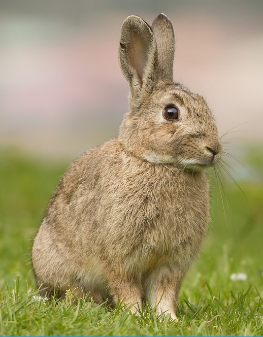
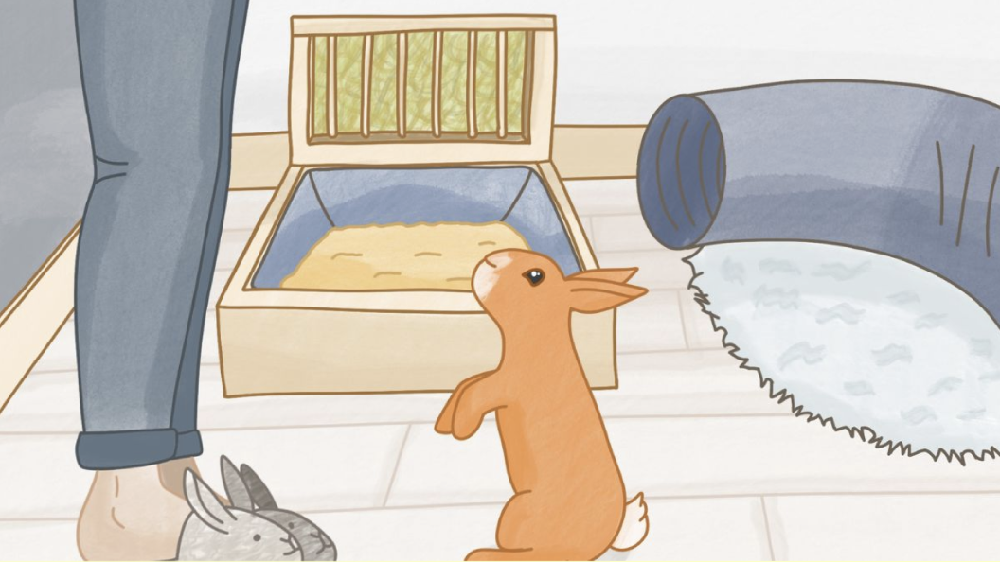
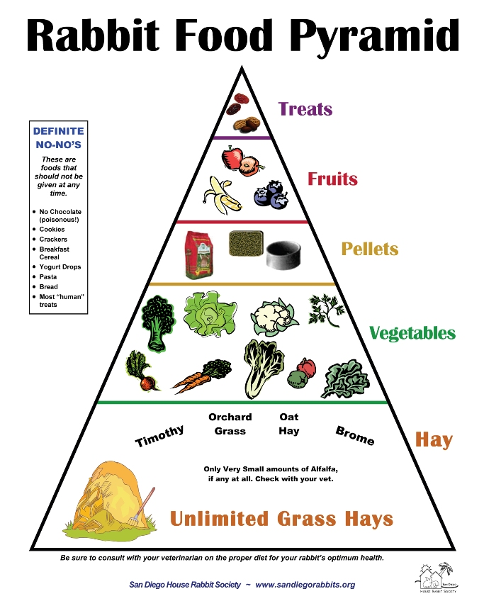

Welcome to the World of Rabbits
Rabbits are adorable, but they require real care and commitment. Learn everything you need before adopting your furry friend.
Learn MoreIs a Bunny Right
for
You?
Bunnies live 8–12 years and require daily attention, ample space for exercise, and regular vet care. They are intelligent, social creatures that thrive in a loving environment. Ensure you are ready for a long-term commitment before bringing one home!

Rabbits need a safe, clean-living space with enough room to move around and exercise daily. They should not be kept in small cages all the time. Provide fresh water at all times and clean their enclosure regularly. Rabbits also need mental stimulation, so toys and interaction are important. Regular grooming and nail trimming are necessary, especially for long-haired breeds. It's also important to take rabbits to a veterinarian who specializes in small animals.
Rabbit Diet
Hay should be the main food (about 80% of their diet). Add fresh leafy greens daily, a small amount of high-quality pellets, and limited treats like fruits.

Why Adopt?
Thousands of wonderful rabbits are waiting in shelters for a loving home. Adopting a bunny not only gives them a second chance at life, but it also frees up valuable shelter space to rescue more animals in need. Shelter bunnies are often already spayed/neutered and litter-trained!
How You Can Help
🤝 Foster
Open your home temporarily to a bunny to help them acclimate to family life before finding a forever home.
💵 Donate
Provide funds to local rescues to cover veterinary care, fresh vegetables, and housing materials.
⏰ Volunteer
Give your time at a local shelter to clean cages, socialize bunnies, and help at adoption events.